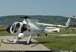
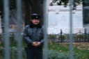

2006.11.04., szombat
tomcat
blog
droidzóna
levrov
Meglehetõsen rendhagyó blogot írok most, ugyanis ma írom a tegnapit is. Akit érdekel tehát, mi történt velem tegnap, az lapozzon vissza (bizisten nem voltam tüntetésen), akit pedig az érdekli, hogy mit kóricált össze kb. háromszáz tüntetõ Budapest utcáin, hogyan jött már megint csesztetni engem a rendõrség, és miért nem csõcselék a csõcselék, az olvasson tovább.
Nagyjából fél egyre értem a Szabadság térre, ahol gyakorlatilag az összes magyar nemzeti radikális szervezet közös demonstrációja kezdõdött egy órától, kivéve Csurkáékat, akik a budai turulszobornál különutaskodtak (jól tették). A tévészékház továbbra is úgy van, ahogy hagytuk, a ruszki emlékmû maradványait viszont háromszoros kordonnal vették körül, nehogy már még jobban szétkapjuk. (Azt csak zárójelben teszem hozzá, hogy mivel a ruszki katonákat ábrázoló bronz dombormûvek szeptember 18-án megsemmisültek, a szégyenoszlopot többé nem lehet helyreállítani. Bár el tudom képzelni, hogy pénzt nem sajnálva újraterveztetik, aztán sipákolnak az "adóforintjaink" miatt, amibe kerül.) Mivel újságírói minõségben voltam jelen, de azt sokan nem értették volna, hogy "blogger", a láthatósági mellényemre a "CSÕCSELÉK" felirat került, már csak a miheztartás végett. Úgyis azt mondták a rendõrök, írjam rá a mellényre, hogy kihez tartozom.
Érkezés a Szabadság térre: sehol senki, viszont jókora kordon zárja el az utat a Kossuth tér felõl
A Nádor utca felõl még nagyobb kordon
Megkerüljük a tévészékházat, ahol így vigyáznak az autókra egy ideje
Na, itt vagyunk. Az ott a színpad.
Tömeg, az egyelõre nincs
Könnyû Károly is megérkezett, akinek a lányát március 15-én az a szemita úriember inzultálta
A Hír TV megmutatja a semmit
Az emlékmû romjait tripla kordonnal vették körül, nehogy az egyetlen megmaradt O betût is lefeszegessük

Hát ezek mik? Fapajzsok. Budaházy Gyuri küldte õket a tüntetõknek, hogy legyen mivel védekezni a rendõrök gumilövedékei ellen, ha netán megint rájuk jönne a puffogtathatnék. Mindegyiken egy-egy betû virít, így jogilag transzparensnek minõsül.
Egy úr Grespik László nevében aláírásokat gyûjtött azoktól, akik rendõri erõszak áldozatául estek. Grespik ugyanis csoportos pert fog indítani a rendõrség ellen. Lehet jelentkezni pertársnak.
Emlékkoszorú

Jövöget a közönség
A tömegben találkoztam valakivel, akire inkább nem emlékszem kicsoda, mert még kihallgatnának errõl is. Elmondta, hogy ott volt, amikor a Madách téren október 23-án beindították a harckocsit.
- Tényleg nem volt benne akksi - erõsítette meg - az öreg azzal a légsûrítõvel indította be. Mondta is, hogy vagy ötször el lehet vele indítani, ha kell. Én vertem le a lakatot a tankról. De ez egy hülyeség, hogy készültünk a tanklopásra, meg vittünk szerszámokat. A szerszámok ott voltak, a mellette álló teherautón, egy dobozban. Be se volt zárva. És az is egy baromság, hogy az öreg azért állt meg, mert kifogyott a benzin. Nem fogyott az ki. Hiszen láthattad, amikor másnap elvitték, a katonák egyszerûen beindították és felgurultak vele a trélerre. Meg egyébként is, a teherautón volt hozzá egy hordó gázolaj is, ha akarjuk, feltöltjük. Ez csak egy gesztus volt, egy jelzés a rendõröknek, hogy kapjanak már észbe. Ment volna az tovább is, ha akar.
Ehhez annyit tennék hozzá, hogy a Hír TV Célpont címû mûsorában megszólalt egy katonai szakértõ, aki elmondta, hogy egy harckocsi még teljesen üresnek látszó tartállyal is meg tud tenni több kilométert, annyi mindig van benne. Tehát nem a rendõrök hõsies akciójának köszönhetõ, hogy a tank megállt, hanem annak, hogy a "csõcselék" még akkor sem akart gyilkolni, amikor a rendõrök már igen.
- Azt mondta az öreg, hogy örül, hogy ezt megcsinálta, mert õ többé biztosan nem vezethet tankot. Ne mondd el neki, de fog! Beszéltem néhány katonai hagyományõrzõvel, akiknek van tankjuk, elintézik neki, hogy hamarosan újból T-34-est vezethessen. Nagyon tiszteljük õt!
Hogy az általam hirtelen nem ismert úriember mellesleg milyen következtetést vont le a harckocsi beindításának sikerébõl, azt nem írom le, gondolkodjon egy kicsit a nemzetbiztonság is. Nézzünk inkább képeket.
Tõle kell félni
Meg tõlük
Novák Elõd megnyitja a dzsemborit
Kaptunk verset is
A csillagot nem sikerült leszedni
"Mi jut eszetekbe errõl a bilincsrõl?" - tette fel a kérdést Novák Elõd a közönségnek. "Bondage party" - jegyezte meg mögöttem valaki.
Pedig a bilincsrõl a Nemzeti Jogvédõ Iroda és Dr. Gaudi-Nagy Tamás kellene, hogy eszünkbe jusson. Beszédében összegezte a rendõri-bírósági visszaélések elleni eljárásokban elért eddigi eredményeket.
A közönség örült
Megjött a Jobbik
Ez a csillag egyébként nem minõsül önkényuralmi jelképnek, mert nem vörös. A horogkereszt bármilyen színben az lenne.
Bemutatkozik a Budaházy Baráti Kör és táblagyára
Bíber József Tibor, a Jobbik tisztviselõje is elmondta, hogy a ruszki emlékmû monnyonle, továbbá boncsákle.
Ennek is volt sikere
Ez a rejtélyes helikopter körözött a fejünk felett. Nem rendõrségi. Egy 400-as teleobjektívvel dolgozó kolléga szerint vöröskereszt volt rajta. De akkor miért cipel kameragömböt? És a mentõszolgálatnak tudtommal nincs is MD-500-asa.

Este, odahaza utánanéztem. A gép az RTL Klubé, egy spotter oldalon találtam róla jó fényképet. Úgy látszik, nem mertek odajönni személyesen. Valóban van a gépen vörös kereszt, bár nem tudni, miért.
A fotósok, újságírók komoly védõfelszereléssel készültek a napra. Volt, akinek a cég kevlársisakot és golyóálló mellényt is biztosított.
Egy hölgy kabátdísze, 7 és fél méter nemzetiszínû szalagból fonva

A sajtót kezdte kurvára nem érdekelni a 7685. "gyurcsánymonnyonle" és "boncsákelazemlékmûvet" jellegû, vége-hossza nincs beszéd
Az unalmassá váló dzsemborit kisebb izgalom szakította meg, amikor egy hetvenakárhány éves tata rám támadt, és megfenyegetett, hogy összetöri a fényképezõgépemet, ha nem takarodok a térrõl. Mondtam neki, hogy mérje fel az erõviszonyokat, mert elveszem a nyugdíját és infarktust kap. Vöröslõ fejjel spiclizett meg provokátorozott, aztán a körülöttünk állók figyelmét próbálta felhívni jelenlétemre, akik sajnálkozva nézték. Pont jó embert talált be.
Nincs tüntetés kutya nélkül
Még egy vers
Igazság szerint elég nyomott volt a hangulat, amikor már a hatszázhetvenedik békés öregúr lépett színpadra, hogy elmondja, mennyire szeret magyar lenni, micsoda csúnya diktatúra van itt, és követeljük, hogy. Ezt már hallottuk.
Ez az öregúr 1956-os veterán, egykor a mûegyetemi csapatban harcolt. Elhozta az '56 õszén viselt kokárdáját. A fekete szalagot a Kossuth téri sortûz után tették rá.
Eljött a pajzsosztás ideje. Novák Elõd önként jelentkezõket kért.

Ezek a pajzsok haladnak majd a menet élén, a BONTSÁK EL felirattal utalva rá, hogy unjuk a szovjet emlékmûvet. "Nem le, hanem el", mondotta Elõd, "mert nekünk mindegy, ha elviszik egy temetõbe, de ne itt legyen."
"Büszke vagyok rátok, fiaim!"
A média érdeklõdõ
A következõ felszólaló ez az Amerikában született magyar srác volt, aki a Budaházy Baráti Kör nevében Budaházy érdekében szólalt fel
Az emlékmû kordonja kapott egy táblát
A fa is tüntet
Kolléga
Még egy kutya

Hol vagytok, székelyek? Itt.

Megérkezett a Magyar Október Mozgalom menete a Hõsök terérõl. Elõl Molnár Tamás és Gonda László.
Közben vettem magamnak egy sapkát. A nyakamban egy ipari védõszemüveg lóg, szemkilövés ellen.

A sapka mellé kaptam ajándékba egy kulcsot. Beteg?
A teleobjektív hatása Patrubány Miklósra
Zagyva Gyula, a Hatvannégy Vármegye Ifjúsági Mozgalom új elnöke
A hangulat lapulását ekkor újabb izgalom dobta fel. Egy középkorú hölgy sietett hozzám, és kérte, segítsek neki, mert provokátort észlelt. Elmondása szerint egy rosszarcú, csapzott hajú, félcsöves kinézetû alak nagyobb köveket szedegetett és tett zsebre. Körbejártuk a teret, de nem találtuk. Késõbb azonban többen látták õt, két-három hasonszõrû alakkal, elkülönülve álldogáltak. Mivel többen is látták õket köveket szedni, elõrementem a színpadhoz, és szóltam a szervezõknek. Õk azonnal be is mondták, hogy vigyázzunk, ne engedjük, hogy rendbontók keveredjenek közénk. Érdekes módon amint ez elhangzott, a félcsöves társaság azonnal elhagyta a Szabadság teret.
A tévészékházat egy rakás rendõr õrizte (meg is lett nekik mondva, hogy ávósok.) Illetve ezek nem is rendõrök. Tetszik látni rajtuk jelvényt?
Nehéz volt közelrõl fényképezni õket, mert amint felemeltem a kamerát, gyorsan elfordultak. Amolyan "kapáslövéssel" kellett lekapni õket, aztán vagy sikerült, vagy nem. Általában csak ennyire.
No, de a lényeg látszik: jelvény vagy más azonosító sehol
Késõbb azt az értesülést kaptam, hogy csak a BRFK központi állományába tartozó rendõrök nem viselik a jelvényüket. Ezek Gergényi személyes alárendeltségében tevékenykednek. Más alegységek (REBISZ, kerületi állományok, közlekedésrendészet) szabályosan viselik az egyenruhát.
Hopp, a kis rutinos, már meg is fordult.

Érdekes módon a rendõrök körül egyetlen leesett jelvényt sem láttam
Ez a srác Nicolas de Lamberterie, a HVIM franciaországi szervezetének elnöke. Rossz hírrel érkezett Párizsból: Nicolas de Sarkozy francia belügyminiszter betiltotta a november 4-ére Párizsban szervezett szimpátiatüntetést, az 1956-os forradalom leverésének évfordulójára való megemlékezést. Na, õ is kiírta magát a magyarok közül.
Waszlavik "Gazember" László is színpadra lépett, elénekelni a Kossuth tér indulóját. A zenei alap hiányzott, mert a CD-t, amin rajta volt, a Kossuth tér elfoglalásakor elvették a rendõrök. Nagy sikere volt azonban az unplugged verziónak is, a közönség vissza is tapsolta.

Jók a fogaid, Laci!
Hubatka, a Szent Korona Rádió fõszerkesztõje

Rövidesen megkezdõdött a pajzsok kiosztása, és összeállt a menet, amely az Astoriához vonult, a Fidesz fáklyás felvonulásához csatlakozni
Megyünk
Egy szakasz rendõr biztosított bennünket
A szûk utcák némi packet loss-t okoztak az üzenet továbbításában
A Deák térre érkezünk
Itt végre volt hely rendesen felállni
Rendbontók
Megérkeztünk a menethez. Hangos "Szervusztok! Szervusztok!" skandálással üdvözöltük a fideszeseket
A Fidesz szervezõi elállták az utat...
... de aztán rájöttek, hogy igazából nem sok értelme van harmincan elállni ezer ember útját. Az Árpád-sávosok besoroltak a menet végére.
A fideszesek legalább negyven-ötvenezren voltak
A felvonulók gyertyákat helyeztek el mindenhová
Tömeg
Itt, a fideszes tömegben is sokan felismertek, jót mulattak a "Csõcselék" feliraton. Kiderült, hogy itt is sokan olvasnak engem, meglepõ módon nem csak a tizenéves korosztály. A menet végén érkezõ, "Gyurcsány, takarodj!" és "Búcsúbuli, táncolj, Feri" jelszavakat skandáló csapatot lelkesen üdvözölték.
- Na, itt vannak a fiatalok, ezek végre csinálnak is valamit! - jegyezte meg valaki.
Fáklyás
Fidesznácista lányok
Mire a tömeg eleje az Astoriára ért, a mindenhová teherautókon kihelyezett hangszórókból feldübörgött Szíjjártó Péter hangja, és gyorsan bejelentette, hogy a rendezvény véget ért, mielõtt a Szabadság tériek odaértek volna a helyszínre. Innentõl mossák kezeiket, ha valami gebasz volna.
Brassóig meg se állunk!
A lelkes gyertyázás-mécsesezés eredménye itt-ott kisebb tûz lett, amit homokosvödrökkel szaladgáló szervezõk igyekeztek oltani
Gyertyatelep az Astoriánál
Ez a kedves idõs házaspár jót mulatott a "Csõcselék" feliratú mellényemen. Elmondták, hogy õk hatvan éve csõcselék, elõtte meg kulákok voltak és kitelepítettek.
Árpád-sávok az Astoria szálló elõtt. "Gyertek velünk! Gyertek velünk!" - kiabálták, és a Fidesz-tüntetés maradványaiból ki is vált vagy öt-hatszáz ember, valamint az összes újságíró, hogy velünk tartson. Úgy ezer-ezerkétszázan indultunk a Keleti pályaudvar irányába.
Már jó messzire eltávolodtunk az Astoriától, kormányellenes jelszavakat skandálva, vagy száz sárga mellényes újságíróval az élen, amikor eszembe jutott, hogy de hiszen szó sem volt róla, hogy mi bárhová is vonulnánk. Bevártam a pajzsos sort, és megkérdeztem az irányító srácot, hogy hová megyünk.
- Mit tudom én! - felelte.
- Ki vezet?
- Nem tudom.
- De te ki után mész?
- Én? Én a többiekkel.
- Jó, de hová?
- Hehe, nem tudja senki.
- Az kurva jó.
Ennyiben maradtunk, és mentünk tovább. Elöl az újságíró kollégákkal azon tanakodtunk, hátha utánunk jönnek. Meg kéne beszélni, hogy az összes sárgamellényes bekanyarodik egy mellékutcába, és nézzük, mi lesz belõle.

Beszaladtam az Uránia moziba, hogy az erkélyrõl csináljak pár képet a vonulókról. Ott láttam ezt a hirdetményt kitéve. Akit tehát érdekel a sci-fi, menjen.
A menet odafentrõl. Ezúton köszönöm a mozi személyzetének a segítséget!
No comment
A Blahára érkeztünk, a rendõrök leállították a forgalmat
Megyünk, mendegélünk... ööö... de hová?
- De mégis, hová a tökbe tartunk? - vetettem fel ismét a kérdést a pajzsos sornak.
- Én úgy hallottam, a Köztársaság térre - felelte valaki.
- És ezt ki mondta?
- Azt nem tudom...
- És mit csinálunk ott?
- Ott most valami MSZP-buli van - szólt valaki.
- Nem baj, majd elrontjuk.
- De ott vannak a rendõrök.
- Nem baj, majd azt is elrontjuk.
- De kurva sokan vannak.
- Akkor majd õk rontanak el minket.
A Blahánál megint betalált egy injekciós tata, miközben valami tévének nyilatkoztam.
- Csõcselék! Tudod, ki a csõcselék!
- Igen, én vagyok.
- Ötvenhatba' kint lettél volna! Kint vótá'?!
- Igen.
- Mikó?!
- Igen.
- Csõcselék!? Milyen csõcselék...
Valaki elirányította egy mellékutca felé, ott durrogjon. A menet továbbra is lendületesen gyalogolt a Keleti pályaudvar felé. Egyszer csak hátranéztünk az újságírókkal, és már nem voltak sehol.
- Hát ezek meg hová lettek?
Visszasiettünk, és még épp láttuk az Árpád-sávos zászlókat eltûnni a keskeny Szövetség utcán. Kisült, hogy néhány eszesebb srác rájött, mit akarnak a rendõrök. Szépen hagynak minket a Köztársaság térre vonulni, mert úticélunkat nyilván jelentették már a tömegbe épült spiclik. Csakhogy nekünk is voltak spiclijeink, akik jelentették, hogy a Köztársaság téren már tripla kordonnal, vízágyúkkal és csõre töltött gumilövedékes puskákkal várnak minket a rohamosztagosok. Na, hát akkor várjanak, mondták a srácok, és elirányították a menetet másfelé. A rendõrök meg csak álltak sorban, mint az orgonasípok, és a beígért náciveszély elmaradt. Pedig biztosan nagyon szerették volna megmutatni a vén kommunistáknak, hogy mennyire jól megvédik õket!
A menet a Szövetség utcában
Novák Elõd és a tüntetõk legszebbje, aki jól be is volt baszva, és állandóan Elõd gázkürtje után kapkodott
A hirtelen kitérõ hadmozdulatnak volt egy érdekes mellékhatása: az eddig velünk vonuló rendõri biztosítás - nem kell nagy dologra gondolni, csak két-három közlekedési rendõr volt - hirtelen eltûnt. Jó ötszáz ember mindenféle biztosítás, felügyelet és szervezés nélkül vonult Budapest mellékutcáin, és ez a kutyát se érdekelte! Mi magunk állítottuk le a forgalmat a mellékutcákban, akik épp az élen voltunk, idõnként nem is a tüntetõk, hanem az újságírók.
Valahol a Szövetség utca végén csöngött a telefonom. Anyám volt az.
- Kisfiam, két rendõrnyomozó van itt, téged keresnek.
- Miféle nyomozók?
- Azt mondják, a BRFK életvédelmi csoportjától.
- Na, csak nem öltem meg valakit?
- Nem tudom, mit akarnak, adom neked õket.
Átadta, beleszólt egy bõrdzsekis rendõrhang.
- Halló? Itt XY fõhadnagy!
- Jó estét. Miben segíthetek?
- Hol van most?
- A Szövetség utca végén, egy tüntetésen.
- És mikor jön haza?
- Oda, ahol most van, sose, mert nem ott lakom.
- Hát hol lakik?
- Mintha nem tudná - feleltem, és megmondtam a címet.
- Mikor lesz ott?
- Mit tudom én, de éjfél elõtt nem sanszos. Viszont este nyolcra megyek a Nemzeti Nyomozó Irodába. Szóljon oda nekik.
- Az Aradi utcába?
- Igen.
- Rendben, köszönöm.
- Egyébként miért keresnek?
- Majd megtudja, viszonthallásra!
Késõbb anyám elmesélte, hogy két ritka tufa ember volt ez a két nyomozó. A következõ belépõt produkálták, mikor apám és anyám ajtót nyitottak:
- Jó napot, rendõrség! Polgár Tamást keressük. Melyikük az?!
- Egyikünk se. Tamás a fiunk.
- Aha. És maguk kicsodák?
Most erre mit mondjak? Egyébként mindezidáig nem tudom, mit akart tõlem a BRFK életvédelmi osztálya. Sem a lakásomon, sem anyámnál nem jelentkeztek, sem aznap, sem másnap, és a Nemzeti Nyomozó Irodában sem esett szó arról, hogy engem bármiért is keresnek. Anyám azt mondta, a házi õrizet megszegésérõl hablatyoltak valamit, de megmutatták nekik a határozatot, ami több, mint egy hete feloldotta azt. Ebben az az érdekes, hogy kiengedésem napján igazoltattak a Városház téren, és még az egyszerû utcai rendõr is egy perc alatt meg tudta állapítani, hogy nem vagyok már õrizetben. Akkor valamit még akadékoskodtak, hogy én miért tüntetek, de nem erõltették, mert valahol érezhették, hogy ilyesmiért nem szokás embereket zaklatni, és lekoptak. Én pedig tüntettem tovább.
Még mindig nem tudtuk, hová tartunk, amikor kiértünk a Nagykörútra, pár saroknyira a Blahától.
- Jobbra! Jobbra! - kiabálták hátulról, és a menet jobbra fordult, a Nyugati felé. Teljesen elzártuk a Nagykörutat.
Megyünk a Körúton
Jött egy Combino, amirõl a tömeg a "Demszky, takarodj" jelszóra asszociált. Néhányan bekopogtak a lépésben elhaladó szerelvény ablakán, hívták az utasokat, hogy jöjjenek velünk.
A villamosmegállóban néhány ember várakozott, elhûlve bámulták az Árpád-sávos zászlókkal hömpölygõ tömeget.
- A villamost most hiába várják - mondtam nekik - a tömeg vége a Blahán van.
- Azt hiszed, nem látom?! - üvöltötte erre egy alacsony emberke. - Marslakónak nézek ki, he?!
- Hát, amilyen törpe vagy, sanszos.
- Hát nincs szemem? Nem látom ezt a tomboló csürhét, he?!
- Csürhét? Kikérjük magunknak! Csõcselék vagyunk! - utasítottam rendre.
A pasas dúlva-fúlva elviharzott a Blaha felé. Én közben felhívtam egy újságírót, a magyarnemzetes Szarka Ágotát, és beszámoltam neki, hogy micsoda marhaság történik éppen.
- A Hír TV szerint a Blahán épp összecsapás készül - felelte. - Azt mutatják, hogy felsorakoztok a pajzsokkal, a rohamrendõrökkel szemben.
- Kicsodák? Hiszen itt jönnek mögöttünk a pajzsosok, és az Oktogonnál vagyunk.
- A tévében ez van.
- Nem is láttunk rohamrendõröket! De akkor kik vannak a Blahán?
- Nem tudom. Azt mondják, a Budaházy pajzsosai.
- Azok mi vagyunk, és nem ott vagyunk. De tényleg, hol a Hír TV?
A Hír TV stábja ugyanis eltûnt a menet mellõl. Visszamentem a menethez, és elmondtam nekik, milyen értesülést kaptam és kitõl. Arra jutottunk, hogy a Hír TV valószínûleg régebbi felvételeket mutat, vagy valaki alaposan kever valamit.
Az Oktogonig egyetlen rendõrt sem láttunk. Ott elfordultunk az Andrássy útra, bár addig úgy volt, hogy a Nyugatihoz megyünk, s onnan a Kossuth térre. Jött egyetlen rendõrautó, megnéztek minket, majd elhajtottak.
Hogy ebbõl mi lesz!

Az elõbbi úriember ismét. Sajátos könnygáz elleni védõfelszerelést visel.
Az Andrássy út közepe felé észleltük elõször a rendõrség bárminemû jelenlétét. A járdán egy szakaszra való rohamrendõr gyalogolt velünk. Odamentem megkérdezni, milyen utasításuk van, de azt felelték, forduljak a BRFK sajtóosztályához. Mindenre ezt válaszolták a rendõrök szinte mindenhol, gondolom, így adták nekik parancsba. A tömeg közben megegyezett, hogy a Vörösmarty térre vonulunk, de hogy miért, az nem derült ki.
Valahol az Operán túl láttuk, hogy a távolban, a Deák térnél rendõrlámpák villognak. Egy sráccal elõreszaladtunk megnézni, van-e náluk elég gumilövedék. Meglepetésünkre csak két autót és négy-öt fehér sapkás közlekedési rendõrt találtunk ott, akik épp a Bajcsy-Zsilinszky úton állították le a forgalmat.
- Elnézést! Merre van a parancsnok? - kérdeztem az egyiket.
- Parancsnok? Hát, az itt nincs - felelte, és felmutatta a rádióját.
- Aha. Miattunk zárják le az utat?
- Igen. Hiszen mi ezért vagyunk. A közlekedésrendészetiek azért vannak, hogy segítsenek.
- Hát, derék. S mit csinálnak a rohamrendõrök, akik velünk vonulnak?
- Ezt tõlük kérdezze meg.
A barátságos fehérsapkások védelmében a tömeg áthaladt a nagy keresztezõdésen, és a József nádor térnél befordultunk a Vörösmarty tér felé. Közben kisült, hogy amíg mi kóricáltunk, Fáber Károly nevû barátunk, aki egyébként hangosítással foglalkozik, és rendszeresen biztosít hangtechnikát például a Jobbik rendezvényeire, elszaladt a rendõrségre, és bejelentett egy tüntetést a Vörösmarty térre. Mire odaértünk, már beüzemelve várt bennünket a hangcucc, és Karcsi lelkesen üdvözölt bennünket, több századra való rendõr társaságában.
- Gyertek bátran - harsogták a hangszórók - ez egy bejelentett, törvényes tüntetés, legyetek üdvözölve!
Így érkeztünk a Vörösmarty térre
Érkezik a tömeg, bár kissé megfogyatkozott a hosszú sétában
A körülbelül háromszáz fõs tömeg az Oroszlános-kút körül gyûlt össze. Én voltam az elsõ, aki szólt hozzájuk. Megköszöntem nekik, hogy segítettek bebizonyítani: nem vagyunk csõcselék. Hiszen mindenki láthatta, hogy több százan voltunk, mindenféle szervezés nélkül, egyetlen rendõr biztosítása nélkül, Árpád-sávos zászlókat hordozva, mégsem borult fel egyetlen autó, nem tört be egyetlen ablak, de még egy kukát sem rúgott fel senki.
- Nem vagyunk csõcselék - mondtam nekik - mert ha nincsenek közöttünk provokátorok, nincs balhé sem.
Azzal levettem a "Csõcselék" feliratú mellényt, és eldobtam. Nem fogok többé ilyet viselni.
Ezután elmondtam, amit a kuruc.info-ra már elõzõ nap kiírtam, hogy feljelentést teszek Kõrösi Imre és Kozenkay Jenõ ellen, akik provokátorként uszították az injekciósokat október 23-án a rendõrök megtámadására, rémhíreket terjesztettek, és ezzel megtévesztetták a hallgatóságot. Elmondtam, hogy nyolc órára várnak a Nemzeti Nyomozó Irodába kihallgatásra, bár errõl alaposan elkéstem a tüntetés miatt. Fáber Karcsi megköszönte a hozzászólást, és meghívott, hogy másnap is jöjjek ki, és beszéljek a "rendszerváltó fórumnak" elnevezett tüntetésen, ami ezentúl minden nap 15 és 20 óra között újra összegyûlik ugyanott. Megmondom õszintén, nem látom sok értelmét egy második Kossuth tér megnyitásának, különösen nem ilyen kevés emberrel, de azért köszönöm szépen. Szerintem a legtöbb, amit elérhettünk, hogy ezzel a tüntetéssel lemostuk magunkról a csõcselék bélyegét, és immár senkinek sincs joga bennünket így nevezni. Három-négyszáz emberrel nem lehet többet csinálni. Nem érdemes lerohanni a Parlamentet, nem érdemes tévét ostromolni, aki nem érti, próbálja ki. A Fidesz százezres tömegével persze már lehetne, de a Fidesz egy nyúlbéla társaság, eszük ágában sincs megdönteni a kormányt. Pedig nem attól kell félni, hogy csõcseléknek fognak nevezni, hanem meg kéne érteni, hogy ezt csak akkor tehetik meg, ha hagyjuk.
Szolgálati közlemény: Legyen szíves az, aki hangfelvételt készített a beszélgetésemrõl Dobrovics Györggyel, jelentkezzen, mert kell a felvétel a rendõrségnek.